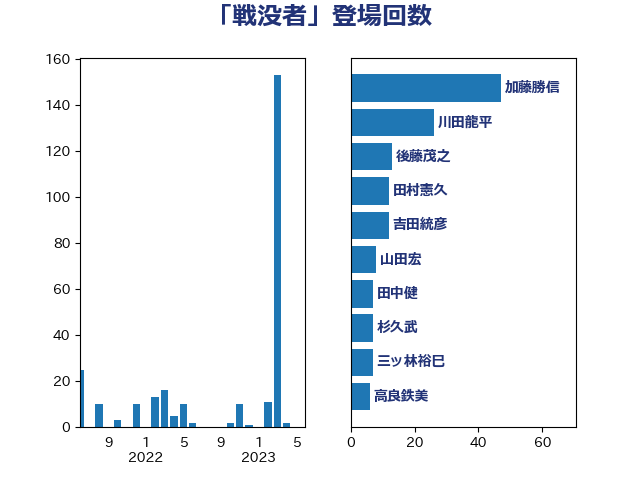

単語「戦没者」

| 加藤勝信 | 自由民主党 | 47 回 |
| 川田龍平 | 立憲民主党 | 26 回 |
| 後藤茂之 | 自由民主党 | 13 回 |
| 田村憲久 | 自由民主党 | 12 回 |
| 吉田統彦 | 立憲民主党 | 12 回 |
| 山田宏 | 自由民主党 | 8 回 |
| 田中健 | 国民民主党 | 7 回 |
| 杉久武 | 公明党 | 7 回 |
| 三ッ林裕巳 | 自由民主党 | 7 回 |
| 高良鉄美 | 無所属 | 6 回 |
| 松野明美 | 日本維新の会 | 5 回 |
| 吉田とも代 | 日本維新の会 | 5 回 |
| 高橋克法 | 自由民主党 | 4 回 |
| 福島伸享 | 無所属 | 4 回 |
| 岸田文雄 | 自由民主党 | 4 回 |
| 宮本徹 | 日本共産党 | 4 回 |
| 伊佐進一 | 公明党 | 4 回 |
| 赤嶺政賢 | 日本共産党 | 3 回 |
| 細田博之 | 自由民主党 | 3 回 |
| 有村治子 | 自由民主党 | 3 回 |
| 仁木博文 | 無所属 | 3 回 |
| 阿部知子 | 立憲民主党 | 2 回 |
| 舟山康江 | 国民民主党 | 2 回 |
| 羽生田俊 | 自由民主党 | 2 回 |
| 窪田哲也 | 公明党 | 2 回 |
| 小池晃 | 日本共産党 | 2 回 |
| 古賀篤 | 自由民主党 | 2 回 |
| 倉林明子 | 日本共産党 | 2 回 |
| 遠藤良太 | 日本維新の会 | 1 回 |
| 芳賀道也 | 国民民主党 | 1 回 |
| 田村まみ | 国民民主党 | 1 回 |
| 牧原秀樹 | 自由民主党 | 1 回 |
| 比嘉奈津美 | 自由民主党 | 1 回 |
| 松木けんこう | 立憲民主党 | 1 回 |
| 星北斗 | 自由民主党 | 1 回 |
| 新藤義孝 | 自由民主党 | 1 回 |
| 新垣邦男 | 立憲民主党 | 1 回 |
| 志位和夫 | 日本共産党 | 1 回 |
| 岩渕友 | 日本共産党 | 1 回 |
| 山添拓 | 日本共産党 | 1 回 |
| 山本太郎 | れいわ新選組 | 1 回 |
| 尾辻秀久 | 無所属 | 1 回 |
| 天畠大輔 | れいわ新選組 | 1 回 |
| 吉川ゆうみ | 自由民主党 | 1 回 |
| 勝部賢志 | 立憲民主党 | 1 回 |
| 佐藤英道 | 公明党 | 1 回 |
| 伊波洋一 | 無所属 | 1 回 |